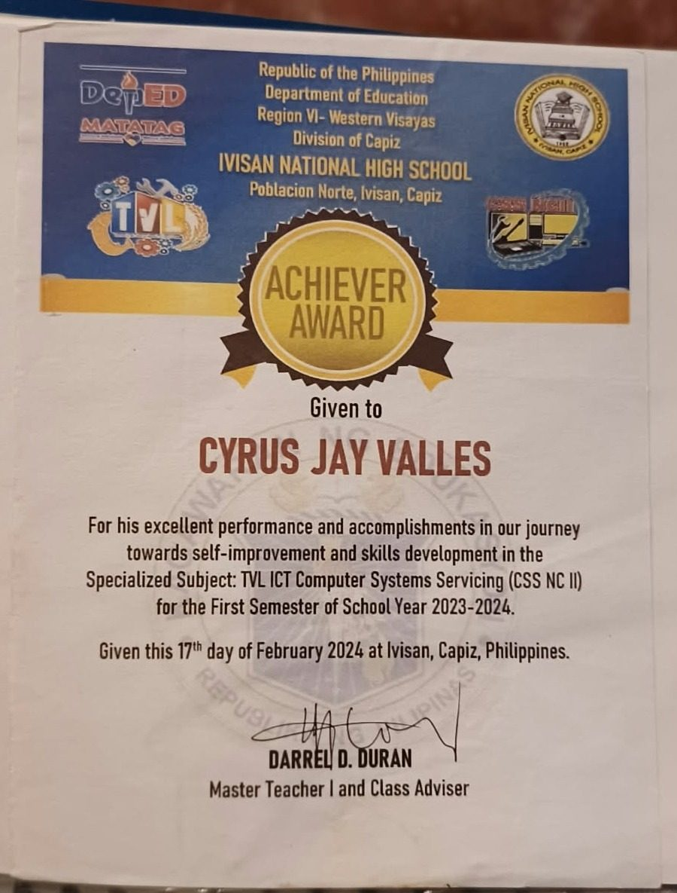
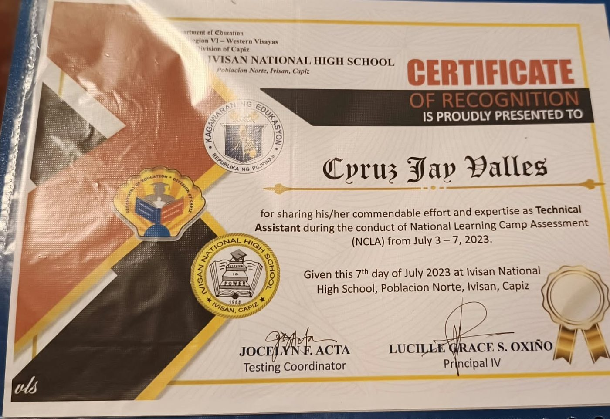
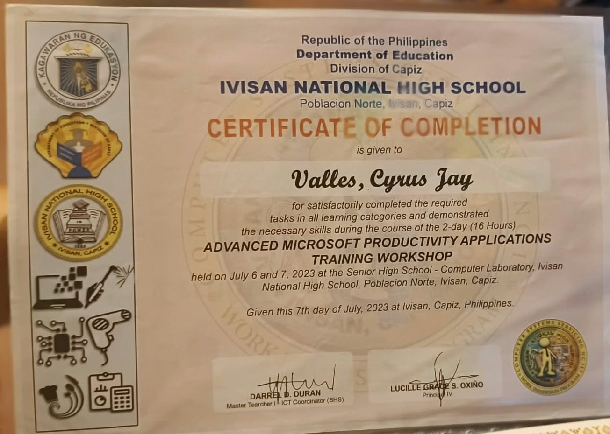
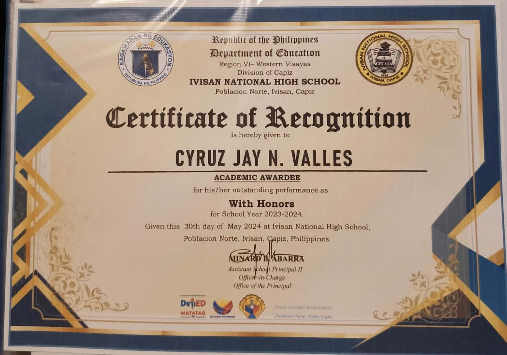
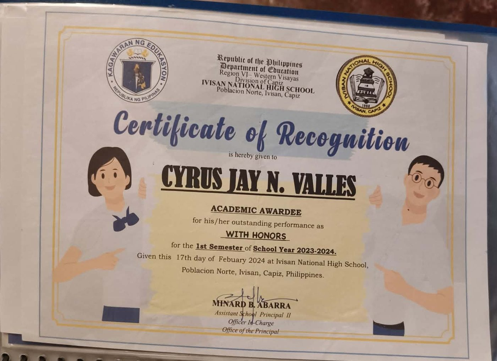
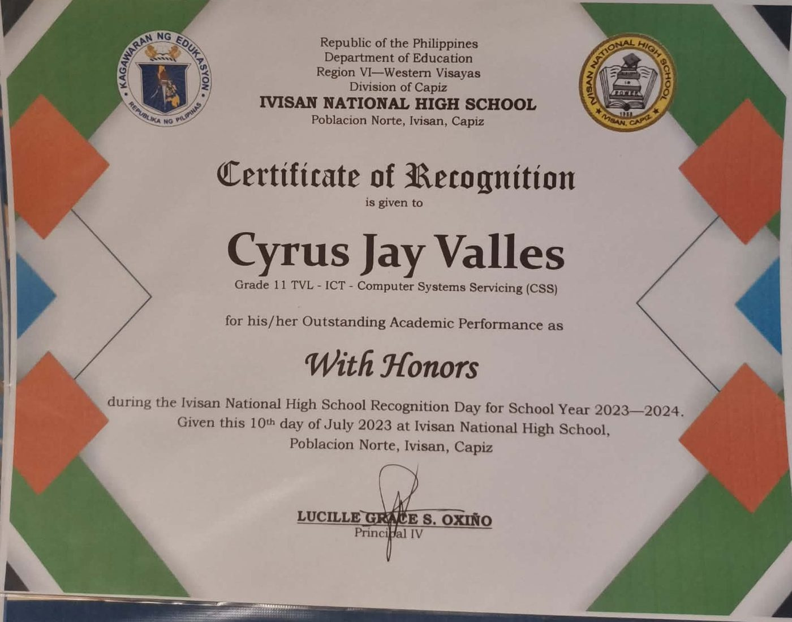

Hardware repair
- Computer repair
- Laptop repair
- Printer repair and servicing
Capiz, Philippines
I am a
Third-year Information Systems Technology student and TESDA NC II certified technician, delivering reliable computer, laptop, and printer repair and custom desktop assembly.
Information Systems Technology student and TESDA National Certificate II (NC II) holder seeking a Computer Technician position. Practical experience in computer repair, laptop repair, printer servicing, and desktop assembly, gained through on-the-job training at Circle Compubiz.
Used in Hand Ninja AI and Face Tracking AI Scanner.
An arcade game powered by real-time hand tracking, allowing players to control gameplay through hand gestures.
A computer vision project that detects faces in real time and presents scanning and recognition visual states.
Third-year student at Filamer Christian University, developing expertise in information systems and software development.
Nationally recognized technical certification awarded upon completion of Senior High School.
Ivisan National High School, Computer Systems Servicing (CSS) strand. Graduated with honors.
Performed diagnostics, repair, and servicing of printers and computers, and assembled desktop systems to specification.
A showcase of my certificates, awards, and recognitions.






Professional documents outlining my qualifications, training, and background.
A resume presenting my educational background, technical skills, on-the-job training, and TESDA NC II certification.
Presents my education and on-the-job training in sequence, together with my technical skills and TESDA NC II certification.
Emphasizes my core capabilities in computer, laptop, printer, and mobile device servicing.
Integrates my key skills with hands-on experience, education, and certification.
Tailored for Computer Technician roles, highlighting the most relevant skills and experience.
Open to Computer Technician opportunities. Get in touch or download my resume to learn more.